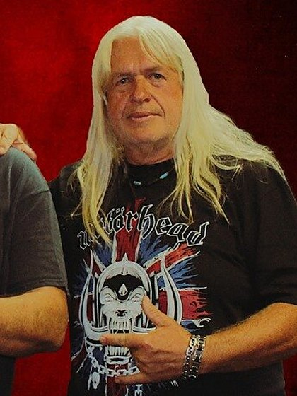

Baskytara
Josef Jakeš
Basová páteř kapely, hrál i na albu Sarah.
Spolu s bicími drží rytmus, na kterém stojí riffy i Troupův zpěv. Hrál na albu Sarah z roku 2012.
- Album Sarah
- 2012
Sestava
Další v kapele
Booking
Hledáte kapelu na svou akci?
Kluby, festivaly, letní parkety, firemní večírky i narozeniny. Zavolejte, domluvíme termín, program i cenu.